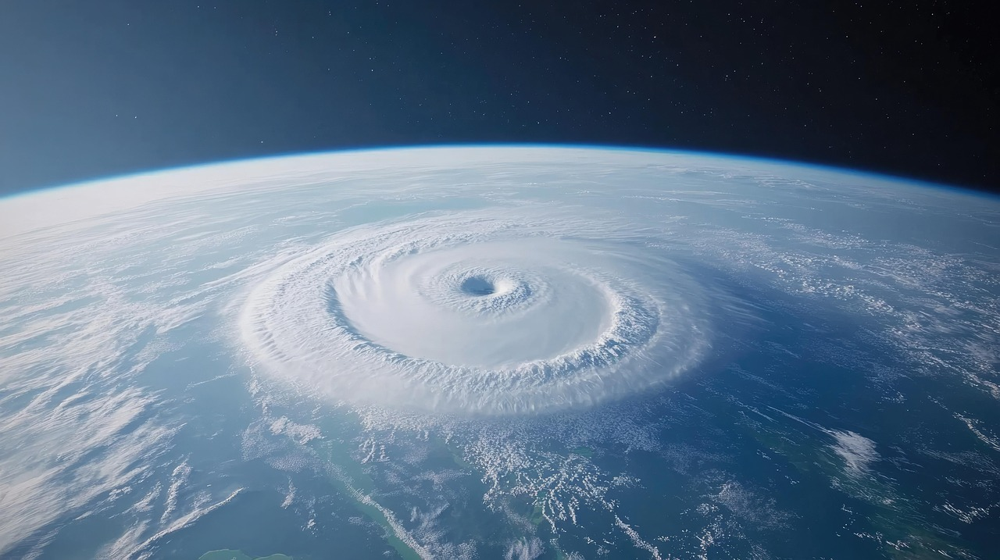
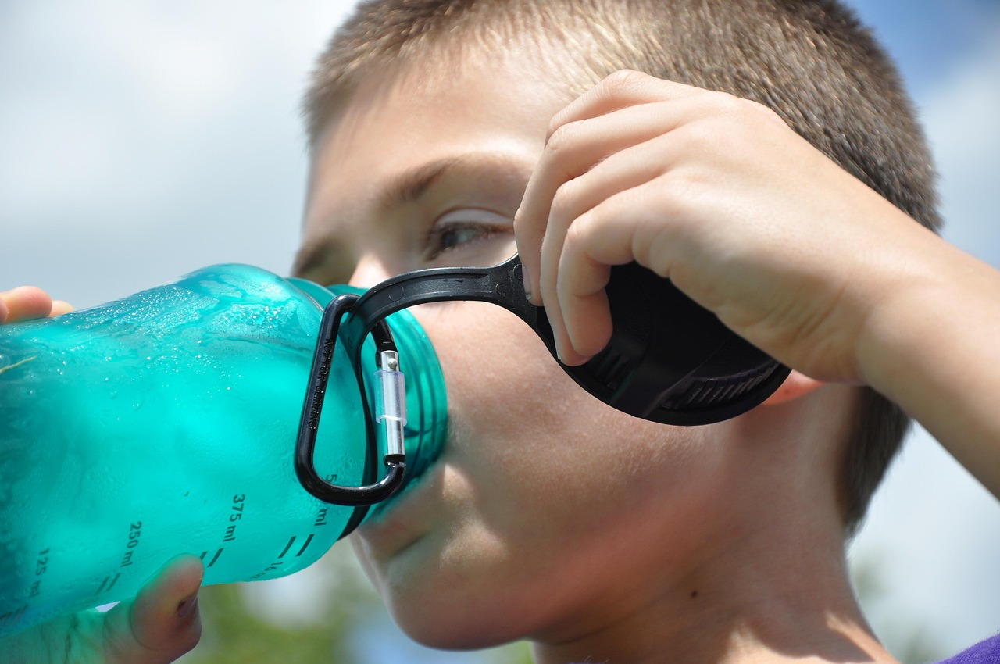
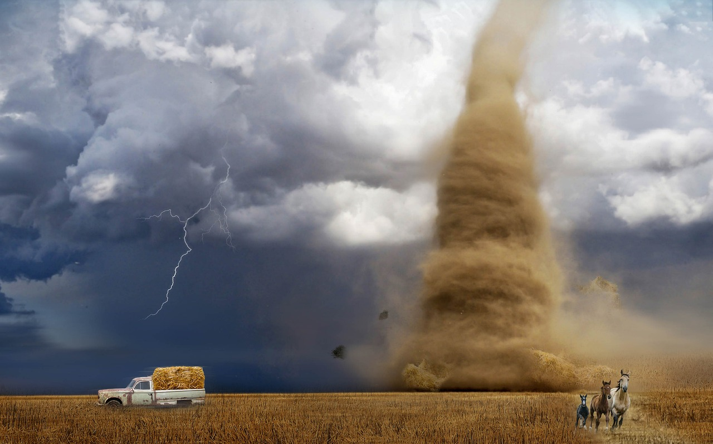
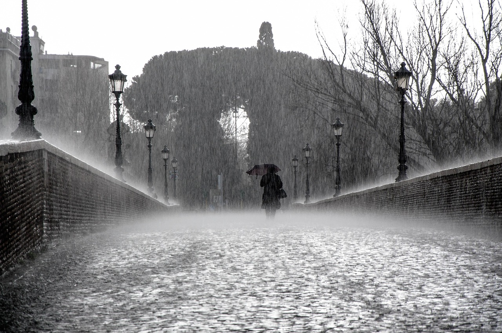

¿Que hacer en caso de un desastre natural?

Huracanes
- Mantente informado con fuentes oficiales (Conagua, Protección Civil).
- Cubre ventanas con madera o cinta adhesiva en forma de X.
- Almacena agua potable y alimentos no perecederos.
- Ten un botiquín de primeros auxilios y documentos importantes a la mano.
- Desconecta aparatos eléctricos.
- No salgas durante el paso del huracán, incluso si parece haber calma.

Tormentas Eléctricas
- Evita salir a la calle durante la tormenta.
- Aléjate de árboles, postes y estructuras metálicas.
- No uses dispositivos electrónicos conectados a la corriente
- No te bañes ni uses agua corriente (puede conducir electricidad).
- Si estás en campo abierto, agáchate en cuclillas, con los pies juntos y la cabeza baja.

Olas de Calor
- Bebe mucha agua, aunque no tengas sed.
- Evita bebidas alcohólicas o con cafeína.
- Usa ropa ligera y de colores claros.
- No te expongas al sol entre las 11 a.m. y las 4 p.m.
- No dejes personas o mascotas dentro del auto.
- Permanece en lugares frescos y bien ventilados.
Frío Extremo
- Viste en capas: ropa térmica, bufanda, gorro, guantes.
- Evita cambios bruscos de temperatura (como salir del calor al frío).
- Asegúrate de que calefactores estén bien ventilados (riesgo de monóxido).
- No uses anafres o braseros dentro de la casa.
- Mantén especial cuidado con bebés, adultos mayores y personas con enfermedades respiratorias.

Vientos Fuertes
- Asegura objetos en techos y balcones (macetas, tinacos, láminas).
- Evita caminar cerca de árboles, espectaculares o postes.
- Maneja con precaución si estás en carretera.
- Cierra puertas y ventanas con firmeza.

Lluvias Intensas
- No cruces calles inundadas, ni a pie ni en auto (aunque parezca poca agua).
- Evita zonas de cauces, ríos y canales.
- Desconecta aparatos eléctricos si hay riesgo de inundación en casa.
- No toques postes o cables eléctricos caídos.
- Guarda documentos en bolsas de plástico.